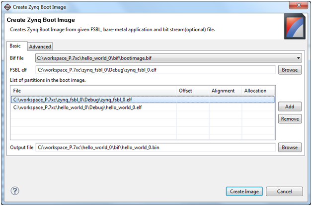
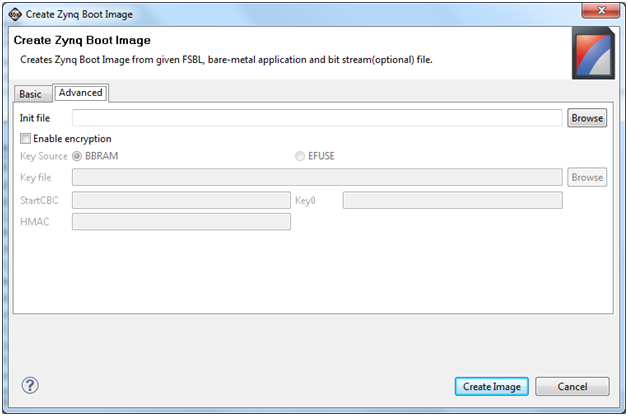

Creating a Zynq Boot Image for an Application
To generate a Zynq Boot Image for an application, do the following:
- Ensure that the FSBL project and C application project are created in the SDK workspace and built so that corresponding elf files are available.
- Select the application project in the Project Navigator or C/C++ Projects view and right-click Create Boot Image, or click Xilinx Tools > Create Boot Image.
- The Create Zynq Boot Image dialog box appears with default values preselected from the context of the selected C project.
Note the following:
- When you run Create Boot Image the first time for an application, the dialog box is pre-populated with paths to the selected project ELF file, the FSBL ELF file, and the bitstream for the selected hardware (if it exists in hardware project).
- If a boot image has previously run for the application, the dialog box is pre-populated with previously used values as per the configuration file present in the project that is in the bif folder.
- You can add new partitions to the boot image by clicking Add and specifying the location of the required data files, if any.
- Specify offset, alignment, and allocation values for partitions in the boot image, if applicable.
- The output file path is set to the bif folder under the selected application project by default.

- In the Advanced tab of the Create Zynq Boot Image dialog box, do the following:
- Specify path to init file by clicking Browse. The init file is an optional BootGen feature used to initialize registers at boot time before loading and running the FSBL.
- Enable/Disable the encryption option using the Enable Encryption check box.
- When encryption is enabled, specify the path to the Key file and optionally provide values for StartCBC, Key0, and HMAC.
Note: You can use the following keywords:
- bbram | efuse - control what key source will contain the decryption key in the FPGA. The keyword bbram will be used as the default key source.
- StartCBC, Key0, and HMAC - These optional keywords allow overriding the corresponding key in a key file. However, the key in the key file will not be updated with the defined key. If the given key file path does not exist, a new key file is created with file name given with a new set of keys, and then used. If the key file does exist, that files with its key is used.

- Click Create Image to create a boot image in the specified output location.
Note: If the given output file already exists in the file system, a dialog box appears to ask if you want to override the existing file. Click Yes to overwrite the previous boot image with a new image. If you select No, then no boot image is created.
Copyright © 1995-2012 Xilinx, Inc. All rights reserved.